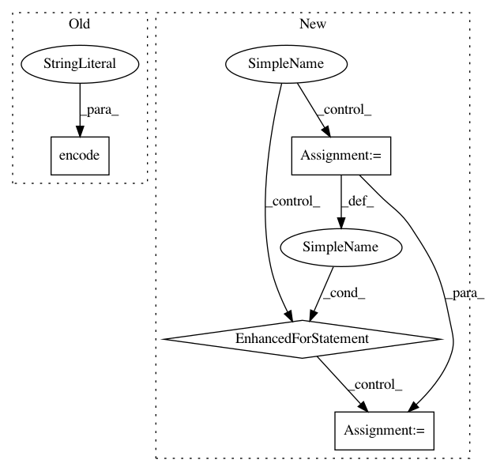

005be3f794c134d26fc9adb98c4dffcbccd33f89,tensorboard/plugins/interactive_inference/witwidget/notebook/visualization.py,WitConfigBuilder,_convert_json_to_tf_examples,#WitConfigBuilder#Any#,454
Before Change
ex.features.feature[feat].float_list.value.append(json_ex[feat])
else:
ex.features.feature[feat].bytes_list.value.append(
json_ex[feat].encode("utf-8"))
tf_examples.append(ex)
return tf_examples
After Change
if isinstance(json_ex, list):
self._set_uses_json_list(True)
feature_names = self.config.get("feature_names")
for (i, value) in enumerate(json_ex):
// If feature names have been provided, use those feature names instead
// of list indices for feature name when storing as tf.Example.
if feature_names and len(feature_names) > i:
feat = feature_names[i]
else:
feat = str(i)
self._add_single_feature(feat, value, ex)
tf_examples.append(ex)
else:
for feat in json_ex:
self._add_single_feature(feat, json_ex[feat], ex)
In pattern: SUPERPATTERN
Frequency: 3
Non-data size: 4
Instances
Project Name: tensorflow/tensorboard
Commit Name: 005be3f794c134d26fc9adb98c4dffcbccd33f89
Time: 2019-05-10
Author: jameswex@users.noreply.github.com
File Name: tensorboard/plugins/interactive_inference/witwidget/notebook/visualization.py
Class Name: WitConfigBuilder
Method Name: _convert_json_to_tf_examples
Project Name: HazyResearch/pdftotree
Commit Name: 38272b533f51bd1ab9786a8c6e3a651442e66fa9
Time: 2018-03-19
Author: lwhsiao@stanford.edu
File Name: pdftotree/TreeExtract.py
Class Name: TreeExtractor
Method Name: get_html_table
Project Name: home-assistant/home-assistant
Commit Name: 6477122b23d70666fa66035aff942692ea979aad
Time: 2016-07-02
Author: adam@armills.info
File Name: homeassistant/components/light/zwave.py
Class Name: ZwaveColorLight
Method Name: turn_on